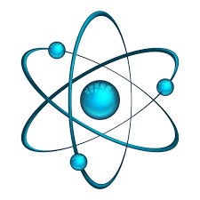
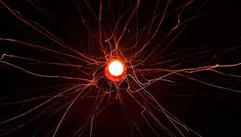
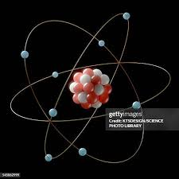
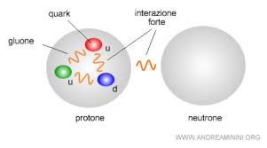
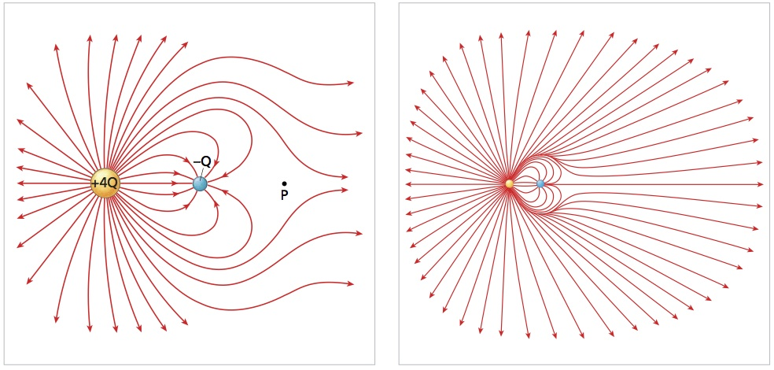
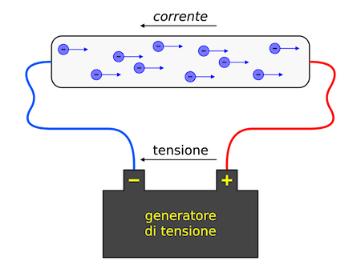

| Atomo | Definizione: L'atomo è la più piccola unità fondamentale della materia che mantiene le proprietà di un elemento chimico. Composto da un nucleo centrale, che contiene protoni (carica positiva) e neutroni (carica neutra), attorno al quale orbitano gli elettroni (carica negativa). Questa struttura permette all'atomo di formare legami chimici e determinare la reattività degli elementi. |
Esempio: L'atomo di idrogeno, la caricha dell'idrogeno è neutro. Ha due cariche che si annullano avvicenda. |
 |
| Protone | Definizione: Un protone è una particella subatomica con carica positiva, che si trova nel nucleo di un atomo. Insieme ai neutroni, i protoni contribuiscono alla massa dell'atomo. La quantità di protoni nel nucleo determina l'elemento chimico dell'atomo (per esempio, l'idrogeno ha un protone, mentre il carbonio ne ha sei). |
esempio: Il nucleo di un atomo di carbonio contiene sei protoni. Ogni protone ha una carica positiva, e questi protoni, insieme ai sei neutroni nel nucleo, conferiscono al carbonio il suo peso e le sue proprietà chimiche uniche. |
 |
| Elettrone | Definizione: Un elettrone è una particella subatomica con carica negativa che si trova all'esterno del nucleo di un atomo. Gli elettroni orbitano attorno al nucleo e sono fondamentali per la formazione di legami chimici e per le proprietà elettriche dei materiali. Immagina che siano le piccole "api" che ronzano attorno al "favo" nucleare! |
Esempio:Immagina un atomo di idrogeno, che ha un solo elettrone. Questo elettrone orbita attorno al nucleo (che contiene un singolo protone) su una traiettoria definita. Quando il nucleo riceve energia (ad esempio, dal calore), l'elettrone può saltare su un'orbita più esterna. Più tardi, l'elettrone può tornare all'orbita originaria, rilasciando l'energia sotto forma di luce. Questo processo è alla base di molti fenomeni luminosi, come le luci al neon. |
 |
| Neutrone | Definizione: Un neutrone è una particella subatomica priva di carica elettrica che si trova nel nucleo di un atomo, assieme ai protoni (che hanno carica positiva). I neutroni hanno una massa leggermente superiore a quella dei protoni e sono fondamentali per la stabilità del nucleo atomico, poiché contribuiscono alla forza nucleare che tiene insieme i protoni. |
Esempio: Immagina un atomo di carbonio, che ha 6 neutroni nel suo nucleo insieme a 6 protoni. I neutroni non hanno carica elettrica, quindi aiutano a stabilizzare il nucleo tenendo insieme i protoni (che sono tutti positivi e quindi si respingerebbero a vicenda senza i neutroni). Questa stabilità nucleare è fondamentale per la struttura atomica e, di conseguenza, per tutto ciò che è materiale intorno a noi. |
 |
| Campo elettrico | Un campo elettrico è una regione dello spazio in cui una carica elettrica subisce una forza. Immagina una carica positiva: intorno a essa si forma un campo elettrico che influenza altre cariche vicine, attirandole o respingendole a seconda del loro segno. La forza esercitata sul campo elettrico dipende dalla distanza e dalla quantità di carica presente. Pensa a un campo elettrico come a un'area invisibile che circonda le cariche elettriche, guidando il loro movimento nello spazio. |
Immagina una carica positiva in una stanza. Intorno a essa, c'è un campo elettrico. Se metti un'altra carica positiva vicino, verrà respinta. Questo è il campo elettrico in azione. |
 |
| Corrente elettrica | La corrente elettrica è il flusso di cariche elettriche che si muovono attraverso un conduttore, come un filo di rame. Allo stesso modo, quando si applica una differenza di potenziale (o tensione) su un conduttore, le cariche elettriche si muovono, creando un flusso di elettroni. Questo flusso di elettroni è ciò che chiamiamo corrente elettrica. |
Immagina un tubo pieno d'acqua: quando apri il rubinetto, l'acqua scorre attraverso il tubo. |
 |